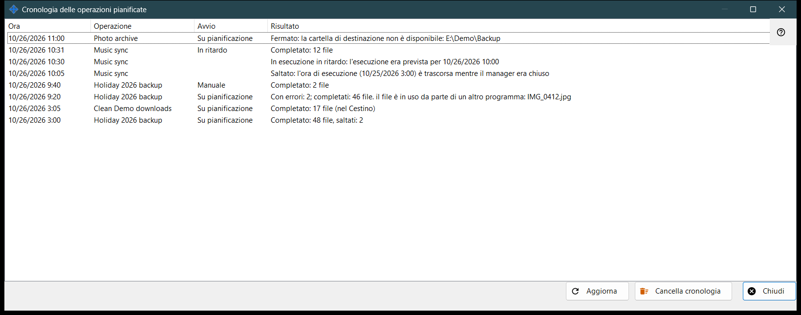
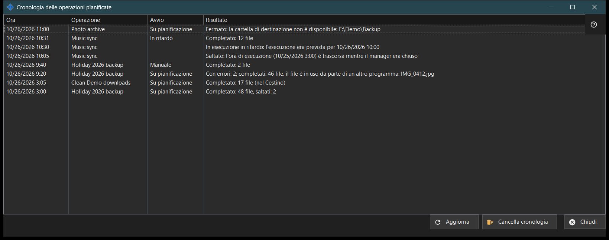

Cronologia delle operazioni pianificate
Scopo
Mostra le esecuzioni e le note recenti delle operazioni sui file pianificate, così come registrate nel giornale. Si apre da «Cronologia..» nella pagina «Operazioni sui file pianificate» delle impostazioni di Share Manager.


In questo ordine
- Leggi l'elenco: Ora, Operazione, Avvio e Risultato.
- Allarga la finestra se un risultato è lungo.
- Premi «Aggiorna» per rileggere il giornale.
- Premi «Cancella cronologia» e conferma per svuotarlo.
- Premi «Chiudi».
Gli elementi
Colonne
Ora, Operazione (il suo nome), Avvio e Risultato. Avvio è Su pianificazione, Manuale, Esegui tutte o In ritardo e resta vuoto per una nota. La finestra legge le ultime 200 voci del giornale all'apertura e con «Aggiorna»; non si aggiorna da sola.
Risultati di un'esecuzione
«Completato: N file», con «, saltati: M» quando alcuni sono stati lasciati fuori e «(nel Cestino)» per le eliminazioni. «Con errori: N; completati: M file» seguito dalla prima causa, come un file in uso, nessun accesso, un file non trovato o modificato, o un disco pieno. «Fermato: ..» quando un ostacolo interrompe un'esecuzione, per esempio una cartella irraggiungibile, una risorsa senza password memorizzata o con chiave del server non confermata, o un dispositivo non in linea. «Non avviato: ..» quando la definizione viene rifiutata, poi «Saltato: ..» e «Interrotto». Il giornale conserva codici, non il testo grezzo degli errori, quindi la formulazione segue la lingua corrente.
Note
Una riga senza Avvio è una nota: «Saltato: l'ora di esecuzione (..) è trascorsa mentre il manager era chiuso», «In esecuzione in ritardo: l'esecuzione era prevista per ..», «Rifiutato: questa operazione è già in esecuzione o in coda» e «Ripresa: la causa dell'arresto è stata eliminata».
Cancella cronologia
Chiede «Cancellare la cronologia delle operazioni pianificate? Le operazioni e la loro pianificazione non cambieranno.» con No come risposta predefinita. Svuota solo questo giornale; le operazioni e le loro pianificazioni restano. Il pulsante è disattivato finché la cronologia è vuota.
Impostazioni del gestore · Impostazioni condivisione SFTP · Impostazioni server di scambio